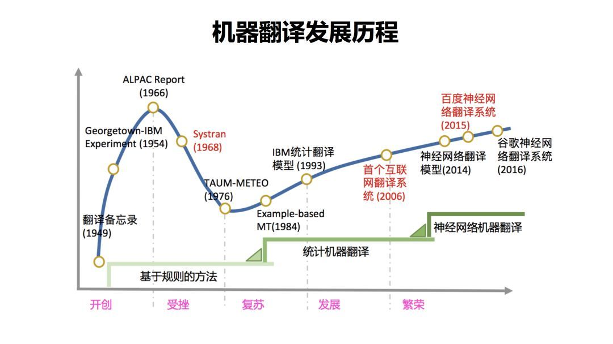
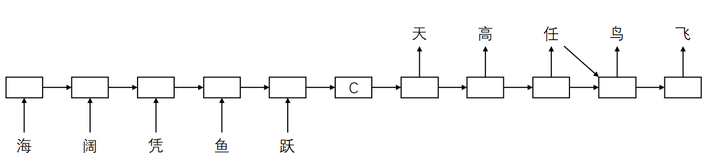
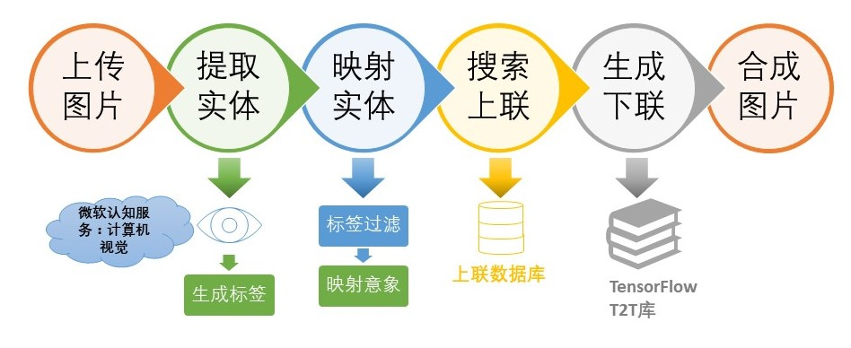

Copyright © Microsoft Corporation. All rights reserved. 适用于License版权许可
智能对联⚓︎
自然语言处理（Natural Language Processing, NLP）是人工智能领域中最重要的分支之一。本案例使用深度学习的方法，利用常见的机器翻译模型，构建了一个智能对联生成的微信小程序。通过对该案例的学习，读者能够了解NLP领域的基础理论，包括词嵌入（Word Embedding）、编码解码模型（Encoder-Decoder）、注意力机制（Attention）等重要知识点，并具备应用、实践能力。通过阅读详实的步骤介绍和参考代码，读者也能了解RNN、LSTM、GRU、Transformer等流行算法，以及Tensor2Tensor等模型库的使用，从而在应用场景中将NLP的理论知识转变成相应的实战技能。
该案例面向对象广泛，扩展性强，不但覆盖了NLP的几大主要知识点，还进一步结合了计算机视觉（Computer Vision）中目标检测、图像分割、图像标注等知识点。初学者可通过复现此案例来学习NLP相关的理论知识，在实践中加深对理论的理解、提高动手能力；对于进阶者，可以通过研究优化对联生成模型等方面，对该案例应用做进一步的扩展，从而提高分析、研究能力。
目录⚓︎
- 智能对联
- 目录
- 案例介绍
- 使用场景
- 发展历程及实现方法
- 案例价值
- 核心知识点
- 先修知识
- 环境与工具
- 软件依赖
- 案例大纲
- 推荐学习时长
- 案例详解
- 程序结构
- 数据收集
- 工具包的选择
- 数据预处理
- 模型训练
- 模型推理
- 搭建后端服务
- 案例拓展
- 作业和挑战
- 总结
- 推荐阅读
- 最新论文
- 深度文章
案例介绍⚓︎
使用场景⚓︎
对联是汉语语言特有的文学形式，是中华民族的文化瑰宝，是我国的重要文化遗产。在我国民间，对联有着十分广泛的应用。其中，最为常见的当属春联了。快过年的时候，每家每户必定会在自家门口贴上一副精选挑选的春联，这里面饱含着劳动人民对新的一年最美好的期盼和最朴实的祝愿：或是期许家庭和睦，或是盼望身体健康，亦或期待学有所成……
在万千词海中，我们如何才能带着对未来的期盼，找到最适合自己的又最为独特的对联？《联景联情》或是你最佳的选择。在这个案例中，我们开发了一款由图片生成对联的微信小程序《联景联情》。上传代表你的祝愿的图片，让《联景联情》为你创作专属于你的对联：希望新年考上理想大学，那就上传你心中的梦想学校大门的图片吧；希望尝遍人间美味，那就上传你还没吃过的美食照片吧！
用户在《联景联情》中任意上传一张图像，AI小程序可以根据识别出的场景和意境，结合信、达、雅的准则，智能生成3组5-7字的美文上下联，用户可以选择喜欢的对联配图发朋友圈/微博抒情，或者在其他特定场合展示文采，适合传播的属性非常适合现代人的社交展示使用场景。
扫描如下二维码即可打开小程序体验：
在此案例中，我们将重点介绍对联生成的实现过程。
发展历程及实现方法⚓︎
机器翻译的发展经历了以下几个阶段（图源自知乎）：

由最初的基于规则的方法，发展到统计机器翻译，再到现在的神经网络机器翻译。
基于规则⚓︎
基于规则的方法是由人来提供翻译规则，从词语到词语的对应，都由人来提供。由于该方法需要人类语言专家来设计规则，且规则复杂，因此开发周期长，成本高。由于基于规则的方法，通常是字字对应的转化，没有考虑上下文，因此翻译质量通常会由于使用场景的不同而产生较大的差异。
统计机器翻译⚓︎
在基于统计的机器翻译中，规则是由机器自动从大规模的语料中学习得到的，而非由人主动提供完整的规则。这种方法的成本较低，因为机器可以利用大量数据自动学习对应的规则，而无需人的参与。由于统计机器翻译基于大量的语料库，因此翻译质量易受语料库的多寡影响。
微软亚洲研究院周明老师团队早在十几年前就已经使用基于短语的统计机器学习的方法，实现了电脑自动对联系统，效果非常好，很好的展现了中国经典文化的魅力，收获了非常多的赞誉。在线体验地址是 这里。
神经网络机器翻译⚓︎
近年来，深度神经网络学习的发展为机器翻译提供了新的思路。通常情况下，神经机器翻译使用编码器-解码器框架。编码阶段将整个源序列编码成一个（或一组）向量，解码阶段通过最大化预测序列概率，从中解码出整个目标序列，完成翻译过程。

编码器、解码器通常使用 RNN、LSTM 来实现，也有的用 CNN 来实现，达到了比较好的性能和结果。
在本次案例中，我们将使用深度学习的方法，实现一个对联自动生成的应用。
当前，常见的深度学习算法有 RNN、 LSTM、GRU、 Transformer。
由于前馈神经网络的输入都是一批静态数据，无法处理对于随着时间变化的连续数据，或者说无法捕捉时间序列的关系，因此科学家提出了循环神经网络（RNN，Recurrent Neural Network），通过连接多个前馈神经网络的隐藏层，从而获取每个相邻时间步之间的联系。在RNN的基础上，科学家又引入了大量优化理论并从此衍生出许多改进算法，如长短期记忆网络（Long Short-Term Memory networks, LSTM）、门控循环单元网络（Gated Recurrent Unit networks, GRU）等。
LSTM主要解决了RNN中容易出现的梯度爆炸和梯度消失的问题，而GRU在LSTM的基础上，做了进一步的简化，但它们始终是基于RNN的算法，十分地消耗计算资源。Transformer算法则基于全新的Attention机制，放弃了循环和卷积，采用了编码器和解码器的结构，在翻译任务上的表现也更优。因此，在这里我们选择使用transformer模型来实现我们的任务。
案例价值⚓︎
此案例特色显明，生动有趣，可以激发学生们对深度学习的兴趣。在技术层面，此案例使学生对深度学习的时序模型有直观的了解。该案例面向对象广泛，扩展性强。对初学者，可重复案例的过程；对于进阶者，不论在模型选择上，还是在模型推理上，都可以有更多的扩展，可提高学生们的探索研究能力。
核心知识点⚓︎
- 使用微软认知服务（Cognitive Service）中计算机视觉（computer vision）服务
- NLP 相关知识
- Sequence2Sequence 模型
- 相关算法： RNN，LSTM，GRU，Transformer
- 模型库的使用
- Tensor2Tensor
- Fairseq
- 在OpenPAI上训练模型
先修知识⚓︎
- 了解RNN的基本概念和原理
参考链接： 循环神经网络
- Seq2Seq模型的基本概念
参考链接：序列到序列
- 了解主流深度学习框架
参考链接：tensorflow, Pytorch
- 熟悉github的使用
参考链接：GitHub入门
环境与工具⚓︎
本案例运行在Azure虚拟机上，虚拟机的系统为Ubuntu 16.04
需要的软件环境如下：
- Python 3.5
- tensorflow 1.14.0
- tensor2tensor 1.14.1
软件依赖⚓︎
在开始之前，请确保安装好以下依赖：
- 训练所需 python packages 在文件 train_requirements.txt 中。
安装示例：
pip3 install -r train_requirements.txt
案例大纲⚓︎
| 序号 | 内容 | 关键知识点 | 收获实战技能 |
|---|---|---|---|
| 1 | 图片信息提取 | Cognitive Service | 使用Cognitive Service提取图像内容 |
| 2 | 文本表征 | 词嵌入与词向量 | 掌握常用词嵌入的方法； 用向量表征文本； 词向量库的使用 |
| 3 | 语言模型简介 | 传统语言模型； 基于神经网络的语言模型 | 了解语言模型发展历程及基本原理 |
| 4 | Seq2Seq序列模型 | Seq2Seq, Encoder-Decoder, Attention, Transformer | 掌握Seq2Seq模型原理 |
| 5 | 模型库的使用 | Tensor2Tensor, Fairseq | 使用模型库构建并训练语言模型；使用训练好的模型进行推理 |
| 6 | 应用开发 | 后端开发 | HTTP服务搭建 |
推荐学习时长⚓︎
- 初次学习的实战者：5~8 小时
- 有一定经验学习者：3~5 小时
案例详解⚓︎
程序结构⚓︎
本案例的基本程序结构如下图所示：

由于在该结构中，NLP的核心内容在于上联生成下联，因此我们将会在案例中关注此部分的实现，并搭建一个简单的web应用将模型封装成api。
数据收集⚓︎
有了模型，还需要数据。巧妇难为无米之炊，没有数据，什么都是浮云。数据从哪里来呢？GitHub 上有很多开源贡献者收集和整理了对联数据，可以进行下载使用。
本案例从下面几个渠道获取对联数据： 1. Github网站上的开源对联数据： https://github.com/wb14123/couplet-dataset/releases 2. Github网站上的开源古诗数据： https://github.com/chinese-poetry/chinese-poetry 3. 微软亚洲研究院提供的10万条对联数据（非公开数据）。
工具包的选择⚓︎
想要完成一个自动生成对联的小程序，想法十分美好，但想要达到这个目标，光拍拍脑袋想想是不够的，需要训练出一个能完成对联生成的自然语言理解模型。于是乎，就有两个选择：
- 自己写一套完成对联生成工作的深度学习模型。这个工作量相当之大，可能需要一个NLP专业团队来进行开发，调优。
- 应用已有的深度学习模型，直接应用。这个选择比较符合客观需要。我们找到了两个工具包：Tensor2Tensor和Fairseq。
Tensor2Tensor⚓︎
Tensor2Tensor（以下简称T2T）是由 Google Brain 团队使用和维护的开源深度学习模型库，支持多种数据集和模型。T2T 在 github 上有完整的介绍和用法，可以访问这里了解详细信息。
在本案例中，我们将演示如何使用T2T工具包进行模型训练。
Fairseq⚓︎
Fairseq 是 Facebook 推出的一个序列建模工具包，这个工具包允许研究和开发人员自定义训练翻译、摘要、语言模型等文本生成任务。这里是它的 PyTorch 实现。
除了下面的使用T2T训练的版本外，我们也提供了使用fairseq训练模型的教程。
数据预处理⚓︎
生成源数据文件⚓︎
网上提供的对联数据形式各异，需要整理成我们需要的格式。我们创建两个文本文件，命名为 train.txt.up 和 train.txt.down，存放上联和下联数据。每个上联/下联为一行，用换行符 ‘\n’ 分隔。
生成词表文件⚓︎
接下来我们要统计上下联中出现多少不同的字，用于后续的模型推理。
-
将上下联数据每个字以“空格”分隔，合并成一个文件。
a. 分隔数据的python代码 (split_data.py)：
import sys filename = sys.argv[1] with open(filename, 'r', encoding='utf-8') as infile: with open(filename + '.clean', 'w', encoding='utf-8') as outfile: lines = infile.readlines() for line in lines: out = "" for i in line.strip(): out += i + (' ') out = out[:-1] out += '\n' outfile.write(out)b. 执行如下命令完成文件分隔
python3 split_data.py train.txt.up python3 split_data.py train.txt.down分隔后生成两个文件：train.txt.up.clean 和 train.txt.down.clean
c. 合并文件为 merge.txt
cat train.txt.up.clean train.txt.down.clean > merge.txt -
统计文件中出现的不同字和每个字的出现次数。
subword-nmt get-vocab --input merge.txt --output merge.txt.vocab -
去掉出现次数，只保留字，并统计字数
cat merge.txt.vocab | awk '{print $1}' > merge.txt.vocab.clean wc -l merge.txt.vocab.clean -
生成测试集。
取训练集中前 100 个数据作为测试集。（在实际训练过程中，没有用到测试集）
head -n 100 train.txt.up.clean > dev.txt.up.clean head -n 100 train.txt.down.clean > dev.txt.down.clean
完成以上预处理以后，我们最终得到以下文件：
- train.txt.up.clean
- train.txt.down.clean
- dev.txt.up.clean
- dev.txt.down.clean
- merge.txt.vocab.clean
将上述文件放到usr_dir目录（新建目录）。
自定义T2T问题⚓︎
-
新建
usr_dir目录。 -
在merge_vocab.py 文件中编写下联生成模型的问题定义。
修改如下参数： 1.
SRC_TRAIN_DATA为训练集上联数据文件 2.TGT_TRAIN_DATA为训练集下联数据文件 3.SRC_DEV_DATA为测试集上联数据文件 4.TGT_DEV_DATA为测试集下联数据文件 5.MERGE_VOCAB为最终字表文件 6.VOCAB_SIZE为字表文件中字的个数该文件注册了问题类
TranslateUp2down，用于指出如何进行上下联翻译。其中generate_encoded_samples函数用于处理词表、编码、创建完成时序任务的生成器的工作。 -
添加一个
__init__.py文件，导入merge_vocab.py。from . import merge_vocab
检查目录⚓︎
完成上述步骤后，请确保你的文件按如下的目录结构放置。
usr_dir \
__init__.py
merge_vocab.py
train.txt.up.clean
train.txt.down.clean
dev.txt.up.clean
dev.txt.down.clean
merge.txt.vocab.clean
生成训练数据⚓︎
在本案例中，若要使用 T2T 工具包进行训练，需要把数据转换成T2T认可的二进制文件形式。
使用如下命令生成训练数据：
USR_DIR=./usr_dir
DATA_DIR=./data_dir
PROBLEM=translate_up2down
t2t-datagen \
--t2t_usr_dir=${USR_DIR} \
--data_dir=${DATA_DIR} \
--problem=${PROBLEM}
其中，
t2t_usr_dir：指定了一个目录，该目录中包含 __init__.py 文件，并可以导入处理对联问题的 python 模块。在该目录中，编写 merge_vocab.py 文件，注册对联问题。
data_dir：数据目录。存放生成的训练数据文件。
problem：定义问题名称，本案例中问题名称为 translate_up2down。
当命令执行完毕，将会在 data 目录下生成两个文件：
translate_up2down-train-00000-of-00001
translate_up2down-dev-00000-of-00001
这便是我们需要的训练数据文件。
模型训练⚓︎
有了处理好的数据，我们就可以进行训练了。你可以选择**本地训练**或**在OpenPAI上训练**。
OpenPAI上训练⚓︎
OpenPAI 作为开源平台，提供了完整的 AI 模型训练和资源管理能力，能轻松扩展，并支持各种规模的私有部署、云和混合环境。因此，我们推荐在OpenPAI上训练。
完整训练过程请查阅： 在OpenPAI上训练
本地训练⚓︎
如果你的本地机器性能较好，也可以在本地训练。
模型训练的代码请参考train.sh。
训练过程依然调用t2t模型训练命令：t2t_trainer。具体命令如下：
TRAIN_DIR=./output
LOG_DIR=${TRAIN_DIR}
DATA_DIR=./data_dir
USR_DIR=./usr_dir
PROBLEM=translate_up2down
MODEL=transformer
HPARAMS_SET=transformer_small
t2t-trainer \
--t2t_usr_dir=${USR_DIR} \
--data_dir=${DATA_DIR} \
--problem=${PROBLEM} \
--model=${MODEL} \
--hparams_set=${HPARAMS_SET} \
--output_dir=${TRAIN_DIR} \
--keep_checkpoint_max=1000 \
--worker_gpu=1 \
--train_steps=200000 \
--save_checkpoints_secs=1800 \
--schedule=train \
--worker_gpu_memory_fraction=0.95 \
--hparams="batch_size=1024" 2>&1 | tee -a ${LOG_DIR}/train_default.log
各项参数的作用和取值分别如下：
1) t2t_usr_dir：如前一小节所述，指定了处理对联问题的模块所在的目录。
2) data_dir：训练数据目录
3) problem：问题名称，即translate_up2down
4) model：训练所使用的 NLP 算法模型，本案例中使用 transformer 模型
5) hparams_set：transformer 模型下，具体使用的模型。transformer 的各种模型定义在 tensor2tensor/models/transformer.py 文件夹内。本案例使用 transformer_small 模型。
6) output_dir：保存训练结果
7) keep_checkpoint_max：保存 checkpoint 文件的最大数目
8) worker_gpu：是否使用 GPU，以及使用多少 GPU 资源
9) train_steps：总训练次数
10) save_checkpoints_secs：保存 checkpoint 的时间间隔
11) schedule：将要执行的 tf.contrib.learn.Expeiment 方法，比如：train, train_and_evaluate, continuous_train_and_eval,train_eval_and_decode, run_std_server
12) worker_gpu_memory_fraction：分配的 GPU 显存空间
13) hparams：定义 batch_size 参数。
好啦，我们输入完命令，点击回车，训练终于跑起来啦！如果你在拥有一块 K80 显卡的机器上运行，只需5个小时就可以完成训练。如果你只有 CPU ，那么你只能多等几天啦。 我们将训练过程运行在 Microsoft OpenPAI 分布式资源调度平台上，使用一块 K80 进行训练。
如果你想利用OpenPAI平台训练，可以查看在OpenPAI上训练。
4小时24分钟后，训练完成，得到如下模型文件： - checkpoint - model.ckpt-200000.data-00000-of-00003 - model.ckpt-200000.data-00001-of-00003 - model.ckpt-200000.data-00002-of-00003 - model.ckpt-200000.index - model.ckpt-200000.meta
我们将使用该模型文件进行模型推理。
模型推理⚓︎
在这一阶段，我们将使用上述训练得到的模型文件进行模型推理，利用上联生成下联。
新建推理脚本文件inference.sh⚓︎
点击查看inference.sh的代码。
在推理之前，需要注意如下几个目录：
- TRAIN_DIR：上述的训练模型文件存放的目录。
- DATA_DIR：训练字典文件存放目录，即之前提到的merge.txt.vocab.clean。
- USR_DIR：自定义问题的存放目录，即之前提到的merge_vocab.py文件。
TRAIN_DIR=./output
DATA_DIR=./data_dir
USR_DIR=./usr_dir
DECODE_FILE=./decode_this.txt
PROBLEM=translate_up2down
MODEL=transformer
HPARAMS=transformer_small
BEAM_SIZE=4
ALPHA=0.6
poet=$1
new_chars=""
for ((i=0;i < ${#poet} ;++i))
do
new_chars="$new_chars ${poet:i:1}"
done
echo $new_chars > decode_this.txt
echo "生成中..."
t2t-decoder \
--t2t_usr_dir=$USR_DIR \
--data_dir=$DATA_DIR \
--problem=$PROBLEM \
--model=$MODEL \
--hparams_set=$HPARAMS \
--output_dir=$TRAIN_DIR \
--decode_from_file=$DECODE_FILE \
--decode_to_file=result.txt >> /dev/null 2>&1
echo $new_chars
cat result.txt
开始推理⚓︎
给inference.sh增加可执行权限
chmod +x ./inference.sh
使用如下命令推理
./inference.sh [上联]
```
例如，
等待推理完成后，你可能会得到下面的输出。当然，下联的生成和你的训练集、迭代次数等都有关系，因此大概率不会有一样的结果。
推理结果也保存到了`result.txt`文件中。
## 搭建后端服务
训练好了模型，我们显然不能每次都通过命令行来调用，既不用户友好，又需要多次加载模型。因此，我们可以通过搭建一个后端服务，将模型封装成一个api，以便构建应用。
我们后端服务架构如下：

首先，利用`tensorflow-serving-api`为我们的模型开启服务，再通过Flask构建一个Web应用接收和响应http请求，并与我们的模型服务通信获取推理结果。
### 开启模型服务
开启模型服务有以下几个步骤：
1. 安装`tensorflow-serving-api`
```
pip3 install tensorflow-serving-api==1.14.0
echo "deb [arch=amd64] http://storage.googleapis.com/tensorflow-serving-apt stable tensorflow-model-server tensorflow-model-server-universal" | sudo tee /etc/apt/sources.list.d/tensorflow-serving.list
curl https://storage.googleapis.com/tensorflow-serving-apt/tensorflow-serving.release.pub.gpg | sudo apt-key add -
sudo apt-get update && sudo apt-get install tensorflow-model-server
```
注意：
1. 安装`tensorflow-serving-api`会自动安装`tensorflow`的cpu版本，会覆盖`tensorflow-gpu`版本。
2. 如果有依赖缺失，请查阅:[https://medium.com/@noone7791/how-to-install-tensorflow-serving-load-a-saved-tf-model-and-connect-it-to-a-rest-api-in-ubuntu-48e2a27b8c2a](https://medium.com/@noone7791/how-to-install-tensorflow-serving-load-a-saved-tf-model-and-connect-it-to-a-rest-api-in-ubuntu-48e2a27b8c2a)。
2. 导出我们训练好的模型
```
t2t-exporter --model=transformer \
--hparams_set=transformer_small \
--problem=translate_up2down \
--t2t_usr_dir=./usr_dir \
--data_dir=./data_dir \
--output_dir=./output
```
3. 启动服务
```
tensorflow_model_server --port=9000 --model_name=up2down --model_base_path=$HOME/output/export
```
此处需要注意，
* `--port`：服务开启的端口
* `--model_name`：模型名称，可自定义，会在后续使用到
* `--model_base_path`：导出的模型的目录
至此，模型服务已成功启动。
### 在Python中调用
启动模型服务后，完成以下步骤即可在Python中调用模型完成推理。
首先，新建`service`目录，并将文件按如下目录结构放置。
其中，字典文件`merge.txt.vocab.clean`和`merge_vocab.py`需拷贝到`service\up2down_model\data`目录。
此外，我们将与模型服务通信获取下联的函数封装在了[up2down_model.py](.\src\service\up2down_model\up2down_model.py)中，下载该文件后拷贝到`service\up2down_model`目录。
另外，我们需要修改[config.json](./src/service/config.json)文件为对应的内容：
* `t2t_usr_dir`：对联问题模块的定义文件及字典的存放目录
* `model_name`：开启`tensorflow-serving-api`时定义的模型名称
* `problem`：定义的问题名称
* `server_address`: 服务开启的地址及端口
最后，在`service`目录下新建Python文件，通过以下两行代码即可完成模型的推理并生成下联。
up2down.get_down_couplet([upper_couplet])
由于服务开启后无需再次加载模型和其余相关文件，因此模型推理速度非常快，适合作为应用的接口调用。
### 搭建Flask Web应用
利用Flask，我们可以快速地用Python搭建一个Web应用，实现对联生成。
主要分为以下几个步骤：
1. 安装flask
```
pip3 install flask
```
2. 搭建服务
我们在`service`目录下新建一个`app.py`文件，内容如下：
```
from flask import Flask
from flask import request
from up2down_model.up2down_model import up2down
app = Flask(__name__)
@app.route('/',methods=['GET'])
def get_couplet_down():
couplet_up = request.args.get('upper','')
couplet_down = up2down.get_down_couplet([couplet_up])
return couplet_up + "," + couplet_down[0]
```
由于我们把推理下联的功能封装在`up2down_model.py`中，因此通过几行代码我们就实现了一个web服务。
3. 启动服务
在测试环境中，我们使用flask自带的web服务即可（注：生产环境应使用uwsgi+nginx部署，有兴趣的同学可以自行查阅资料）。
使用以下两条命令：
In Ubuntu，
```
export FLASK_APP=app.py
python -m flask run
```
In Windows，
```
set FLASK_APP=app.py
python -m flask run
```
此时，服务就启动啦。
我们仅需向后端 http://127.0.0.1:5000/ 发起get请求，并带上上联参数`upper`，即可返回生成的对联到前端。
示例，
```
http://127.0.0.1:5000/?upper=海内存知己
```
返回结果如图：

后端服务的完整代码请参考：[.\src\service](.\src\service)
## 案例拓展
至此，我们已经学会了小程序的核心部分：训练模型、推理模型及搭建后端服务使用模型。由于小程序的其余实现部分涉及比较多的开发知识，超出了NLP的范畴，因此我们不再详细介绍，而是在该部分简单讲解其实现思路，对上层应用开发感兴趣的同学可以参考并实现。
### 实体提取
当用户通过小程序上传图片时，程序需要从图片中提取出能够描述图片的信息。
本案例利用了微软的Cognitive Service完成从上传的图片中提取实体的工作。上传图片后，程序会调用微软的Cognitive Service并将结果返回。
下面是返回结果的示例：
``
返回结果中包含了tags和description`字段，里面分别包含了该图片的意象。
筛选及翻译Tag⚓︎
可以看到，调用cognitive service以后，会返回大量的tags，而我们需要从中挑选出符合要求的tag。在这个阶段，我们有两个目标：
- 找到能**准确描述**图片内容的tag
- 找到**概括性强**的的tag
首先，我们为了找出能准确描述图片内容的tag，我们取了返回结果中tags和description中都存在的tag作为对图片描述的tag。这样就初步筛选出了更贴近图片内容的tag。
从直观上理解，概括能力越好的tag自然是出现频率越高的。因此，我们构建了一个高频词典，收集了出现频率前500的tag，并给出了对应的中文翻译。我们仅保留并翻译在词典内的tag，而不在词典内的tag会在这个阶段被进一步地过滤掉。
在高频词典的构建中，我们对中文翻译做了改进，使其与古文意象更接近，便于搜索出对应的上联。因此，高频词典不再是纯粹的中英互译的词典，而是英文tag到相关意象的映射。例如，我们将'building'映射为'楼'，'skiing'映射为'雪'，'day'映射为'昼'等。
利用这样的高频词典，就完成了翻译及过滤tag的过程。
思考：会不会出现过滤后的tag太少的情况？
为此，我们做实验统计了两个指标，若仅保留前500个高频tag，**tag覆盖率**约为100%，**tag平均覆盖数**约为10个/张。
（ 注：tag覆盖率 = 至少有一个tag在高频词典内的图片数 / 总图片数 * 100% ， tag平均覆盖数 = 每张图片中在高频词典内的tag数之和 / 总图片数 * 100% ）
因此可以确保极大多数的图片是不会全部tag都被过滤掉的，并且剩余的tag数量适中。
上联匹配⚓︎
提取完实体信息，我们的目标是找出与实体匹配程度较高的上联数据。于是，我们希望尽量找出包含两个tag的上联数据，这样能够保证匹配程度较高。
匹配分为如下几个步骤：
-
分别找出包含每个tag的上联的索引
例如，假设通过上一步的翻译及过滤最终得到了：'天'， '草'，'沙滩'这几个tag，我们需要分别找出包含这几个tag的上联的索引，如：
- '天'：{ 3, 74, 237, 345, 457, 847 }
- '草'：{ 23, 74, 455, 674, 54, 87, 198 }
- '沙滩'：{ 86, 87, 354, 457 }
-
找出包含两个tag的对每组索引分别取交集
例如， * '天' + '草'：{ 74 } * '天' + '沙滩': { 457 } * '草' + '沙滩'：{ 87 }
-
合并取交集的结果
例如，得到结果{ 74, 457, 87 }。
-
若交集为空，则随机从各自tag中选取部分索引。
-
从上面的结果中随机选出上联数据。
通过以上几个步骤，我们可以在确保至少包含一个tag的同时，尽可能找出包含两个tag的上联。
下联生成⚓︎
得到了上联以后，我们可以利用上面开启模型服务中提到的方法生成下联。
搭建后端⚓︎
后端部分的实现也可以参考上述的**搭建Flask Web应用**或Flask中文文档。
在部署至生产环境时，可以使用uwsgi+nginx的方式。
前端应用⚓︎
至此，我们就可以利用上述的方式搭建一个Web服务，从上传图片开始到生成下联，实现一个应用的后端服务。
前端部分，我们可以使用微信小程序、HTML5页面、iOS/Android客户端等多种方式构建，而无需变更后端应用。
扫码可以体验我们用微信小程序实现的完整应用：
作业和挑战⚓︎
-
程序复现
从 GitHub 上下载70万条对联数据（couplet.tar.gz 文件），按照上述教程进行数据预处理，并使用 Tensor2Tensor 库进行模型训练。
-
增量改进
-
数据收集：在 GitHub 上收集更多对联数据，进行模型训练。
-
使用 Fairseq 库进行模型训练，并对比两种模型库库不同算法之间的训练效果。
-
自己编写用户交互程序，调用模型推理API，完成给出上联，自动生成下联的工作。
-
扩展对联生成程序，用于古诗、绝句等的自动生成。
总结⚓︎
本案例利用深度学习方法构建了一个上联预测下联的对联生成模型。首先通过词嵌入对数据集编码，再利用已编码的数据训练一个Encoder-Decoder模型，从而实现对联生成的功能。另外，该案例还结合微软Cognitive Service中的目标检测，对用户上传图片进行分析，利用分析结果匹配上联，再通过训练好的模型生成下联。最后，搭建后端服务实现完整的应用功能。该案例很好地演示了从模型选择、训练、推理到搭建后端服务等完整的应用开发流程，将理论与实践结合。